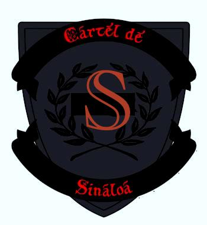
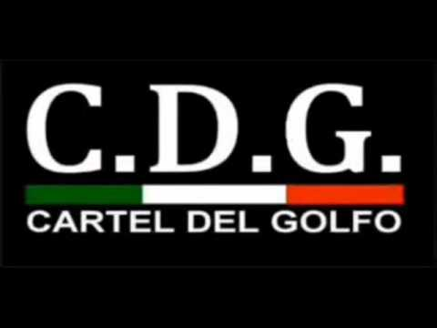
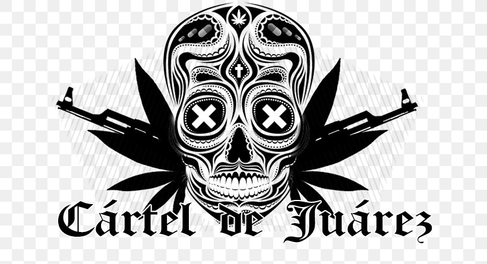

Sinaloa Cartel Logo

Gulf Cartel Logo

Juarez Cartel Logo
 Los Zetas Logo
Los Zetas Logo
Although Mexican drug trafficking organizations have existed for several decades, their influence increased after the demise of the Colombian Cali and Medellín cartels in the 1990s. Mexican drug cartels now dominate the wholesale illicit drug market and in 2007 controlled 90% of the cocaine entering the United States. Arrests of key cartel leaders, particularly in the Tijuana and Gulf cartels, have led to increasing drug violence as cartels fight for control of the trafficking routes into the United States. Federal law enforcement has been reorganized at least five times since 1982 in various attempts to control corruption and reduce cartel violence. During that same period, there have been at least four elite special forces created as new, corruption-free soldiers who could do battle with Mexico's endemic bribery system.[39] Analysts estimate that wholesale earnings from illicit drug sales range from $13.6 to $49.4 billion annually. The U.S. Congress passed legislation in late June 2008 to provide Mexico with US$1.6 billion for the Mérida Initiative as well as technical advice to strengthen the national justice systems. By the end of Felipe Calderón's administration (December 1, 2006 – November 30, 2012), the official death toll of the Mexican Drug War was at least 60,000.Estimates set the death toll above 120,000 killed by 2013, not including 27,000 missing.
| Cartel Name | Territory | Leader |
|---|---|---|
| Sinaloa | Sonora, Baja California | Ismael Zambada Garcia |
| Gulf Cartel | Tamaulipas | Luis Alberto Flores Blanco |
| Juarez Cartel | Chihuahua | Juan Pablo Ledezma |
| Los Zetas | Nuevo Leon | Hugo “El Ganso” Sanchez Garcia |
Los Zetas Logo